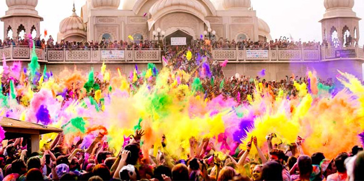
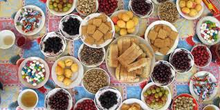
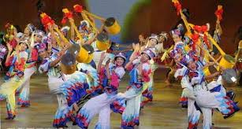

The continent of Asia is commonly divided into geographic and cultural subregions, including Central Asia, East Asia, North Asia, South Asia, Southeast Asia, and West Asia. While linked together on a geographical continent, there has been little unity or common history between the many cultures and peoples there. Asian art, music, and cuisine, as well as literature are all important parts of Asian culture. Eastern philosophy and religion, including Hinduism, Taoism, Confucianism, Buddhism, Judaism, and Islam, also play major roles. One of the most complex parts of modern Asian culture is the East-West dichotomy, as increasing Western influence clashes with traditional ideals.
While there are as as many religions in Asia as there are anywhere else, Buddhism is one of the predominant ones. Buddhism was established in northern India about 2500 years ago in response to the life and teachings of Gautama Siddhartha who was given the title "Buddha" or "awakened-one."
A traditional Chinese meal that consists of lots of small dishes of a bunch of different kinds of foods, including steamed or fried dumplings.
Tea plays a major role in Asian culture - whether it's in China, India or Malaysia - tea ceremonies, in their various forms, are a major part of most Asian cultures.
Origami is the art of folding paper. While it is quite popular in Japan, it is believed to have originated in China in the first century AD. One of the most popular origami shapes is the crane. The crane is thought to be a sacred animal in Japan and legend has it that if you fold 1,000 paper cranes, your wish will come true.